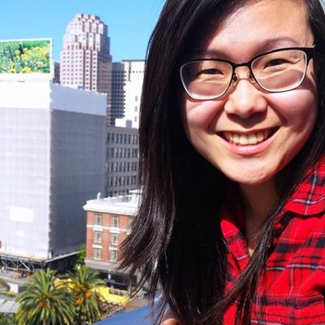

Undiscovered is a new podcast about the left turns and lucky breaks that make science REALLY happen.

Annie Minoff is co-host and producer of Undiscovered. She also plays the banjo.
Prior to Undiscovered, Annie produced stories about science and the arts for Science Friday. (Like this story, about guitar playing robots, and this one, where astronauts review “Gravity” à la Siskel and Ebert.)
Her first run-in with radio was as an undergrad at Columbia University, where she covered the New York arts scene for the universe’s best radio station, WKCR-FM (“Sit Back and Dig the Shellac”). She couldn’t major in radio, so she earned a B.A. in American Studies.
Since then, her work has been heard on Studio 360, How Sound, and PRX’s Remix. She’s also been an assistant producer for the world’s only rock ‘n’ roll talk show, WBEZ’s “Sound Opinions,” where she had the honor of meeting the Jesus of Cool, Nick Lowe.
Elah Feder is co-host and producer of Undiscovered. She’s also Science Friday’s resident Canadian.
She first got into podcasts in 2007 when she was a grad student studying evolutionary biology at the University of Toronto. Working late nights in the lab, sorting fruit flies under a microscope, Elah would listen to a lot of Gwen Stefani. After some noise complaints, she phased out the beats, got hooked on radio and podcasts, and has never been the same.
For five years she co-hosted and produced I Like You, a podcast about love and like. She’s also produced segments for CBC Radio shows like Spark, The Current, and The Sunday Edition, and has contributed to publications like The Guardian, The LA Times, and Xtra, Canada’s LGBT newspaper. After completing her master's at Columbia's Graduate School of Journalism, Elah investigated the oil and gas industry as a fellow at the school's Energy & Environment Reporting Project.
Christopher Intagliata is Science Friday’s senior producer, which means he’s chief cheerleader for all the radio and podcast projects here. He helps to select and shape stories, or put them to a gentle death if necessary. He’s also the coordinating producer for Science Friday’s live stage events around the nation, and has skated Olympic ice and served as a prop in an optical illusion for SciFri.
Brandon Echter is Science Friday’s digital managing editor. He manages the organization’s social media and engagement projects, so if you came here from SciFri on Twitter, Facebook, or any social channel, you’ve read his work (and have him to blame). His favorite project is SciFri’s annual Cephalopod Week. Designed logo
Brandon Echter is Science Friday’s digital managing editor. He manages the organization’s social media and engagement projects, so if you came here from SciFri on Twitter, Facebook, or any social channel, you’ve read his work (and have him to blame). His favorite project is SciFri’s annual Cephalopod Week.

Brandon Echter is Science Friday’s digital managing editor. He manages the organization’s social media and engagement projects, so if you came here from SciFri on Twitter, Facebook, or any social channel, you’ve read his work (and have him to blame). His favorite project is SciFri’s annual Cephalopod Week.
Christian Skotte is the co-director & head of digital at Science Friday. He helps manage and implement Science Friday’s organizational, editorial, and digital strategy. He’s spoken at conferences in the U.S. and internationally on topics like digital media and audience growth. (Occasionally he’s been asked back to speak again.) He’s overseen social media and audience engagement campaigns that were covered by the New York Times, the Washington Post, BuzzFeed, and more.
Danielle Dana is Science Friday’s executive director (a.k.a. scary boss). She works to keep board, budget, staff, funders, fans, and Ira happy . . . most of the time. She’s also responsible for SciFri strategy and ensuring that staff don’t stray too far off task.
Rachel Bouton is the events and office manager at Science Friday, where she makes sure that there is rocket fuel-strength coffee in the kitchen, and that no cephalopods are growing in the fridge.
Claire Merchlinsky is an illustrator and artist based in Brooklyn, NY. She designed oringal art for all of Undiscovered's episodes. Her work has appeared in The New Yorker, The New York Times, Bitch Magazine, The New Republic, The Village Voice, and NPR.
Michelle Harris is a fact-checker for Undiscovered. She also fact checks for Gimlet's Science Vs and Radiolab.